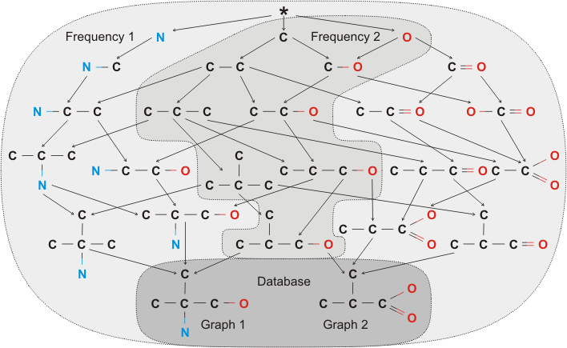

|
ParSeMiS (built 2008-09-04) Parallel and Sequencial Mining Suite |
||||||||
| PREV NEXT | FRAMES NO FRAMES | ||||||||
See:
Description
| Packages | |
|---|---|
| de.parsemis | Contains the main class and all packages of ParSeMiS. |
| de.parsemis.algorithms | Contains spezific classes and spezialisations for single algorithms. |
| de.parsemis.algorithms.dagminer | Contains the DAG Mining Algorithm. |
| de.parsemis.algorithms.gaston | Contains the Gaston Mining Algorithm. |
| de.parsemis.algorithms.gSpan | Contains the gSpan Mining Algorithm. |
| de.parsemis.chemical | TODO: refactoring |
| de.parsemis.graph | Contains the graph representations of ParSeMiS. |
| de.parsemis.jp | Contains all (remote) classes required for the parallel distribution in the JavaParty environment. |
| de.parsemis.miner | Contains common parts of each mining approach. |
| de.parsemis.miner.chain | Contains general functionality to build the search lattice. |
| de.parsemis.miner.environment | Contains settings and statistics handling. |
| de.parsemis.miner.filter | Contains post-search fragment filter. |
| de.parsemis.miner.general | Contains database and fragment handling. |
| de.parsemis.parsers | Contains a huge amount of parsers for read/write graphs from/to files/data streams. |
| de.parsemis.strategy | Contains different strategies for the traversal of a search lattice. |
| de.parsemis.tools | Contains a set of (console) tools to convert, compare or generate graph datasets. |
| de.parsemis.utils | Contains a set of useful classes/interfaces required by the algorithms or to handle graphs. |
| de.parsemis.visualisation | TODO: refactoring |
| de.parsemis.visualisation.chemicalVisualisation | |
| de.parsemis.visualisation.gui | |
| de.parsemis.visualisation.prefuseVisualisation | |
This document is the documentation of ParSeMiS.
ParSeMiS is the Parallel and Sequential Mining Suite. The main focus of
ParSeMiS is the search for frequent substructures
(Fragment) in a given
(Graph) database. This search can be configured to be
sequential on single core CPUs or parallel on multi(core) processor computer or
even on a cluster (supported by JavaParty).
ParSeMiS is a framework to design, implement, and test mining approaches.
Core of each algorithm is the so called search lattice (see the
SearchLatticeNode and
Extender classes) containing all substructures of
the database. The structure of such a lattice depends on the algorithm.
Example of a complete search lattice of a database containing two moleculare graphs:

For more details about the search lattice generation see de.parsemis.miner.chain
and the corresponding algorithms.
Mining a search lattice is equal to a traversal through the lattice and filtering the
interesting substructures. A depth first, breadth first or any other traversal
is possible. Even parallel traversal is available (see de.parsemis.strategy).
In general, search lattices are huge so just the interesting or currently traversed parts, not the whole lattice, are generated and traversed.
|
ParSeMiS (built 2008-09-04) Parallel and Sequencial Mining Suite |
||||||||
| PREV NEXT | FRAMES NO FRAMES | ||||||||